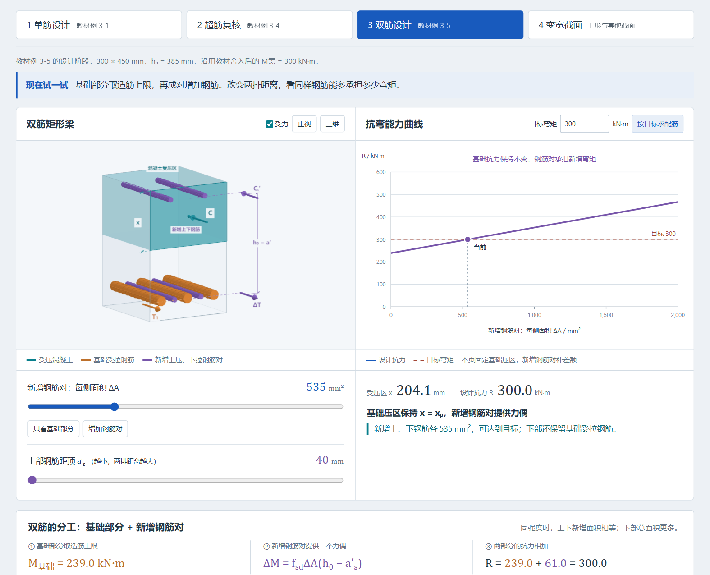
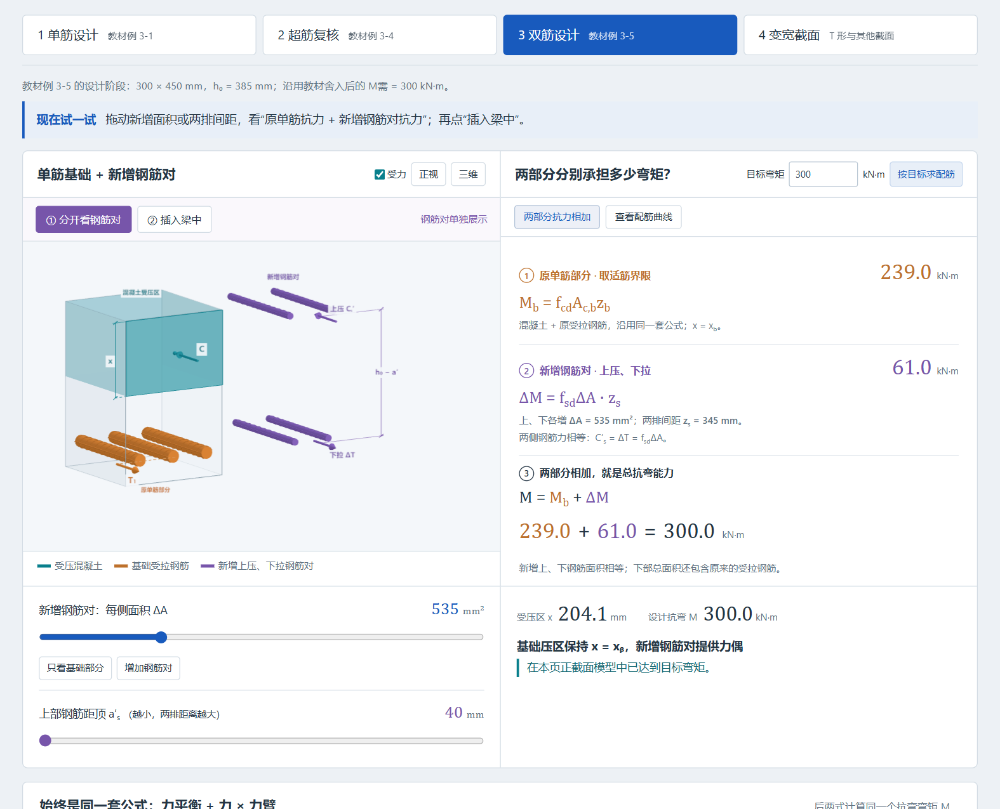
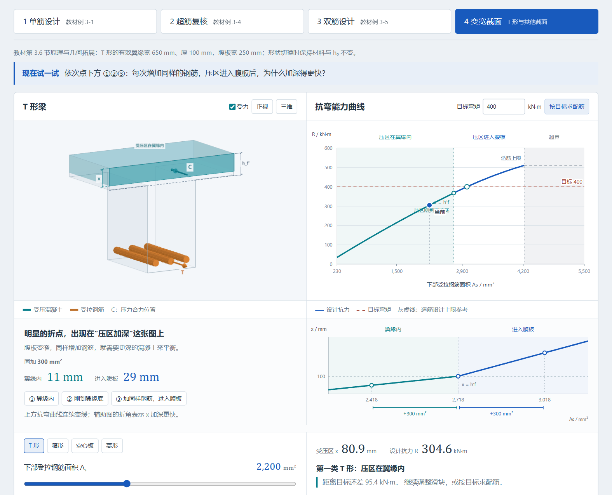
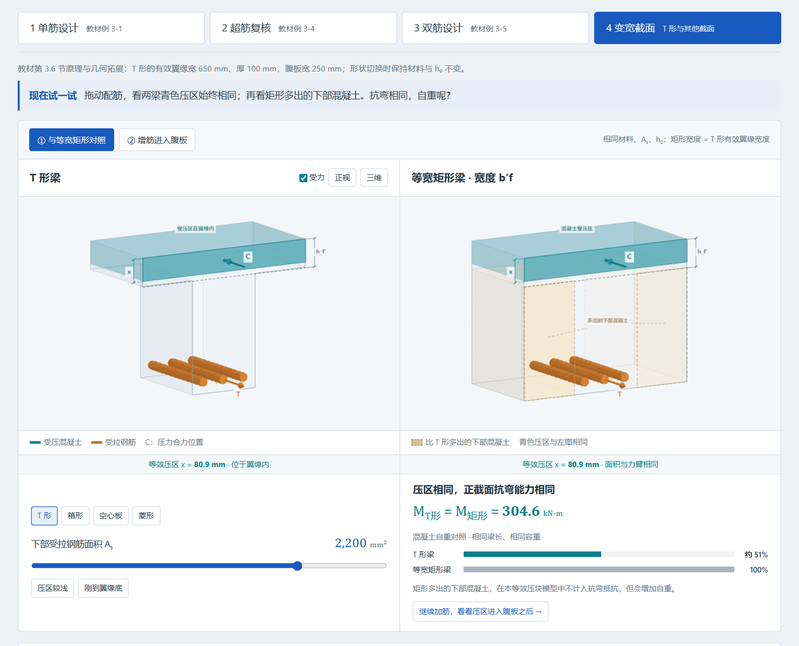
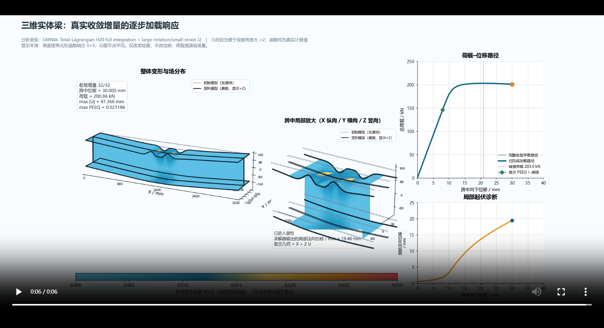
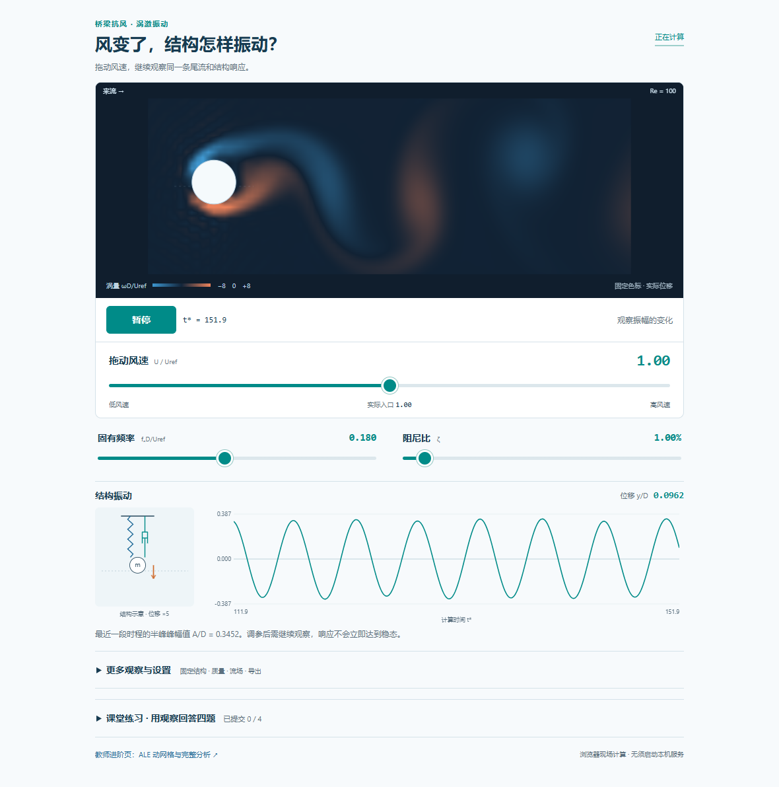
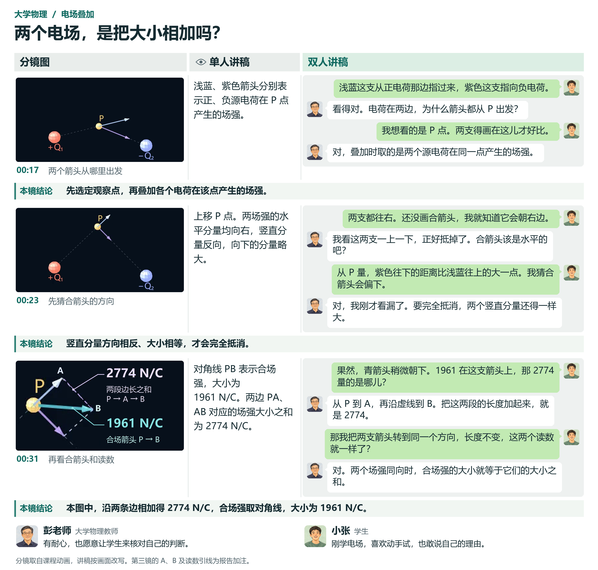
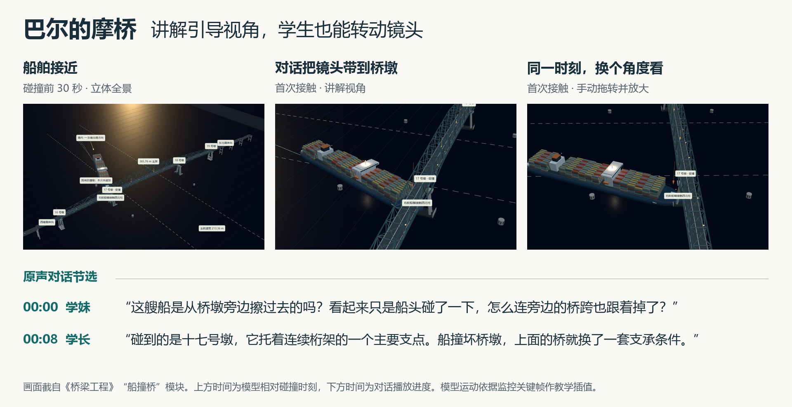
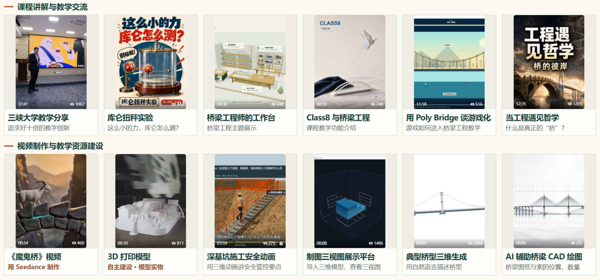
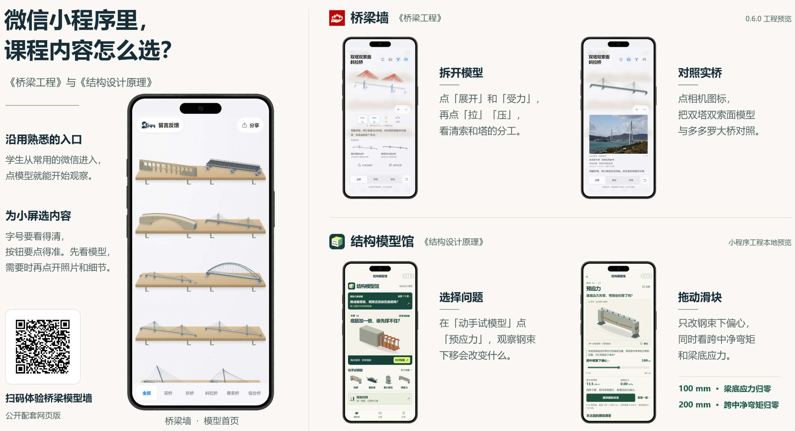

二维／三维动画
同一条蓝线，怎样从梁变成拱？
跟住同一条蓝线；讲到系杆受拉时，还能回看上一笔拱脚受力。
编数字教材时，我们一边做，一边问：原来哪一步，学生只能听我们讲？交互页让他动手核对；视频把转眼就过去的变化留在眼前；到了小程序和视频号，他还得替第一次看的人想一遍。下面的图都取自我们自己的教材、分镜和作品。
同样是双筋截面，先给一条曲线，学生容易盯着总数看。9 月 17 日改这一页时，我们把新增的一对钢筋先移到梁外，让学生看清哪两股力是后来添的，再把它插回去。T 形梁换了另一种写法：把等宽矩形放在旁边，先对照两块青色压区，再回到曲线看压区怎样进入腹板。下面四张图分别截自改前留档和改后网页。




空间关系、加载过程和流场变化各用一种原型。点原图可以自己试。 试一道移动电荷自测题 ↗
| 呈现样式 | 认知负荷 | 适合的表达场景 |
|---|---|---|
工程制图 三维选面与三视图联动 | 点一次，实体和三个投影同时高亮。把要对照的面放在一起，减少来回找图的负担。 | 同一斜截面到了主、俯、左视图，为什么分别成了斜线、圆和椭圆？ |
结构设计 三维加载过程回放 | 先看整梁，再停在同一加载步看局部。比较前后两帧，每次只追一处变化。 | 工字梁跨中越压越低，受压翼缘从哪里开始起皱？ |
桥梁抗风 二维流场与位移曲线 | 固定阻尼，只调风速；两幅图共用一段时间记录，把注意力留给尾涡和位移的关系。 | 风速变了，涡从哪一侧脱落？这时圆柱往哪边振？ |
AI 改图 在例 5-5 里保留槽长，请 AI 平移切槽刀具。先猜哪几条投影线会动，再核对拟改参数，点“应用到模型并重绘”，回到三视图量两端余量。 进入第 5 章 ↗
| 呈现样式 | 认知负荷 | 适合的表达场景 |
|---|---|---|
| 梁到拱动画 | 每讲完一步，右侧就留下一笔受力判断，减少瞬态信息。 | 两张静图都读得懂，想看清梁的上缘怎样拱起。 |
| 电场双人对谈 | 逐个核对分量，留出停顿，让听者解释自己的判断。 | 两支电场箭头方向不同，合场会偏向哪边？ |
| 库仑扭秤短片 | 先借熟悉的推门动作理解力臂，再看长杆和细丝的配合。 | 观众刚遇见扭秤，想知道那么小的力怎么量。 |
| 巴尔的摩桥可控场景 | 停在同一时刻再转镜头，免去追着运动的船记位置。 | 讲解从船带到桥墩，观众还想绕到船的另一侧。 |
二维／三维动画
跟住同一条蓝线；讲到系杆受拉时，还能回看上一笔拱脚受力。
双人对谈
小夏和阿澈核对箭头前，可以暂停原片，先说出自己的猜想。
教材原片里，小夏和阿澈讨论电场叠加。我们又把同一画面写成小张和彭老师的对话。下面是原分镜，左列标出画面时刻，中列和右列分别是单人、双人讲稿。

科普预告片
约 98 秒，从首饰秤、推门的手，一直讲到扭秤的转角。
可交互视频
跟随对话看船接近桥墩，可以暂停、转动、放大，再继续听。

进入原场景，播放对话、转动模型 ↗我们常分享实验讲解、工程案例、模型制作和游戏化教学四类短视频。讲库仑扭秤，手感觉不到的力，一根细丝却能把它变成看得见的转角。发出去以后，我们和学生一起看，有多少人点开、愿意看多久、在哪一步还有疑问。观看数据帮我们调整开头和节奏，评论帮我们改讲解。

学生打开桥梁墙，先选一座桥。想看塔和索怎样分工，再点“展开”和“受力”；想和真实的桥对照，再点照片。《结构设计原理》的结构模型馆里，一次只改钢束位置，同时看梁底应力和跨中净弯矩；要比较两者什么时候归零，这两个读数就得留在一起。

桥梁墙预览内实桥照片：nimame，Tatara Bridge 2010，CC BY 2.0
床架上的支座在哪儿？学生留下照片和受力简图，下一位读者可以指着原图追问。